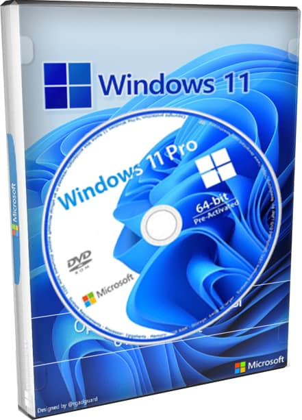
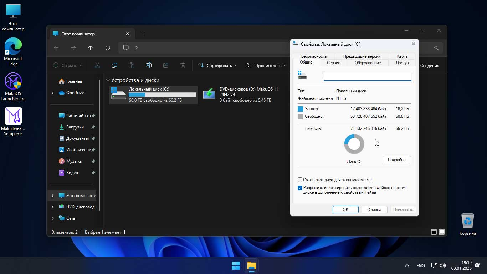
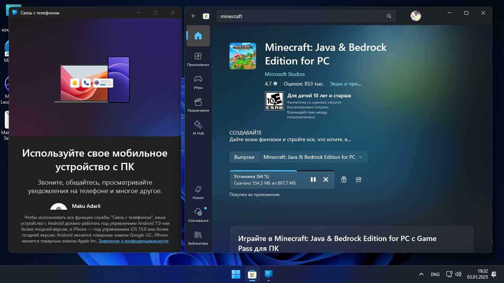
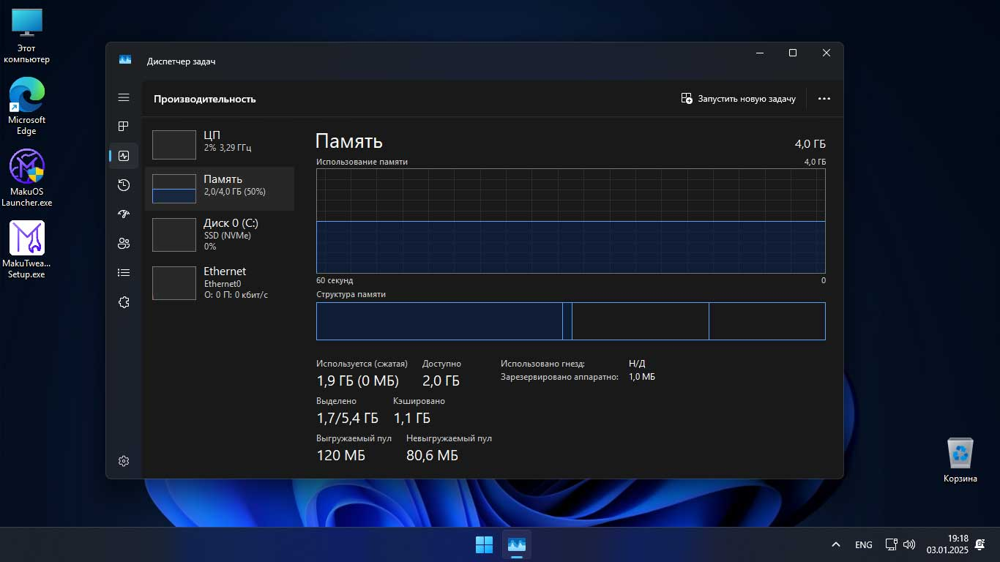
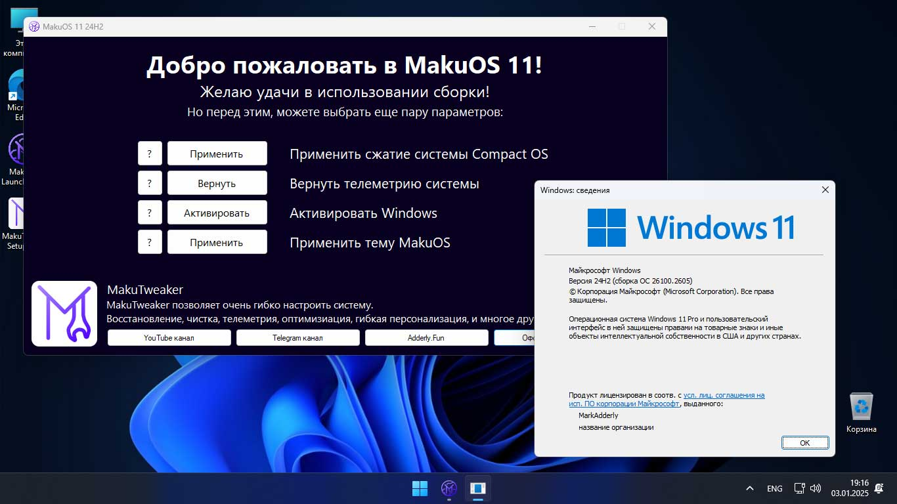

MakuOS 11 24H2 V4

Удалённые приложения:
Карты, Люди, Новости, Почта, Календарь, Clipchamp,
Microsoft Teams, Microsoft Family, Quick Assist, Dev Home, Solitaire Collection,
Power Automate Desktop, Get Help, Feedback Hub, Outlook, Microsoft Todos.
Применённые настройки:
Основное:
Включены скрытые файлы, папки, и диски
Включены расширения файлов
Скрыта кнопка "Галерея"
Откреплены закрепления на панели задач
Отключён поиск Bing на панели задач
По умолчанию открывается "Этот ПК" вместо "Главная"
Отключён быстрый запуск
Отключена гибернация
Отключено залипание клавиш
Отключена первоначальная настройка Microsoft Edge
Отключена задержка контекстного меню
Отключена автоперезагрузка при синем экране смерти
Включена иконка "Этот Компьютер" на рабочем столе
Включён буфер обмена
Убрана подпись "Ярлык" у новых ярлыков
Отключено требование интернета в первоначальной настройке
Разрешен вход в локальный аккаунт
Автоматически введён 30 дневной ключ продукта
Удалён рекламный диалог "Давайте завершим настройку этого устройства"
Отключён Content Delivery Manager, который отвечает за предустановку рекламы
Запрещена установка стандартных мусорных UWP приложений после обновления системы
На панели задач добавлена кнопка "Завершить задачу" в ПКМ по программе
Включён DirectPlay
Интегрированны NET Framework 2.0, 3.0, 3.5.
Телеметрия:
Запрещена диагностика установленных приложений
Запрещена телеметрия за активацией системы
Запрещена публикация активности пользователя
Запрещён сбор информации о пользователе
Запрещён сбор информации об устройстве пользователя
Запрещён автоматической вход в аккаунт OneDrive
Запрещён сбор информации о производительности системы
Запрещено эксперементирование над системой пользователя
Отключена отправка результатов поиска пользователя
Отключена активация управления голосом
Отключена тихая установка рекламных приложений
Отключён сбор информации о голосе пользователя при использовании функций ввода голосом
Прочие изменения:
Интегрированны все обновления по начало января 2025 года.
В сборке присутствует только Русский язык, другой язык можно установить в параметрах.
Убрана проверка на железо при установке системы.
Предустановлен MakuTweaker.
В сборке используется изменённое OOBE, в котором включён вход в локальную учётную запись,
и скрыты какие либо страницы с рекламой.
На рабочем столе имеется приложение "MakuOS 11 Launcher", в котором можно применить Compact OS, и активировать систему.
{kind=link}

{kind=link}

{kind=link}

{kind=link}

Краткое описание изменений в сборке
Удалённые приложения:
Были удалены все UWP приложения, кроме Медиаплееров, Фотографий, Будильников,
Терминала, Xbox, Калькулятора, Записи звука и Блокнота.
Применённые настройки:
Основное:
Включены скрытые файлы и расширения
Откреплён мусор на панели задач
Удалена предустановка мусорных UWP приложений
На панели задач добавлена кнопка "Завершить задачу" в ПКМ по программе
Отключён быстрый запуск, гибернация, залипание клавиш, задержка контекстного меню, и Включён DirectPlay.
Интегрированны NET Framework 2.0, 3.0, 3.5.
Телеметрия:
Была отключена, запрещена, и удалена какая либо телеметрия.
Прочие изменения:
Интегрированны все обновления по начало января 2025 года.
В сборке присутствует только Русский язык, другой язык можно установить в параметрах.
Убрана проверка на железо при установке системы.
Предустановлен MakuTweaker.
На рабочем столе имеется приложение "MakuOS 11 Launcher", в котором можно применить Compact OS, и активировать систему.